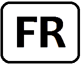
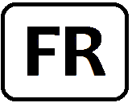

Welcome
Canadian Number Theory Association Conference
The Canadian Number Theory Association (CNTA) was founded in 1987 at the International Number Theory Conference at Laval University (Quebec city), for the purpose of enhancing and promoting learning and research in number theory, particularly in Canada. To advance these goals, the CNTA organizes bi-annual conferences that showcase new research in number theory, with the aim of exposing Canadian and international students and researchers to the latest developments in the field. The CNTA meetings are among the largest number theory conferences world-wide. A list of previous CNTA meetings can be found here. The Fields landing page can also be found here
Registration and funding
Participants are kindly invited to register here.
The registration fees are TBARibenboim Prize
The Ribenboim Prize, named in honour of Paulo Ribenboim, is awarded for distinguished research in Number Theory by a mathematician who is Canadian or has close connections to Canadian Mathematics. Previous winners are: Andrew Granville (1999), Henri Darmon (2002), Michael Bennett (2004), Vinayak Vatsal (2006), Adrian Iovita (2008), Valentin Blomer (2010), Dragos Ghioca (2012), Florian Herzig (2014), Jacob Tsimerman (2016), Maksym Radziwill (2018). The 2020 award will be presented as part of the CNTA XV meeting. As the tradition requires, during the award ceremony the winner will be invited to give a plenary talk. The Canadian Number Theory Association is soliciting nominations for the Ribenboim Prize, to be awarded at CNTA XVI, 22-26 June 2020 in Toronto. Named in honour of Paulo Ribenboim, the Ribenboim Prize has been awarded every two years to an extraordinary number theorist with a connection to Canada. In order to be eligible for the current prize, the nominee must have received their PhD no earlier than July 1, 2008. To nominate a candidate, please send a letter of nomination and CV for the nominee to ribenboimprize@gmail.com, and arrange to have three letters of recommendation sent to the same address, no later than 15 February 2020. The prize committee strongly encourages the nomination of women and members of other groups under-represented in past awards.Venue
The venue will be held at the University of Toronto and the Fields Institute.
Public Lecture
TBA
Plenary Speakers
Jennifer Balakrishnan (Boston)
Chantal David (Concordia)
Wei Ho (Michigan)
Holly Krieger (Cambridge)
Antonio Lei (Laval)
Hector Pasten (PUC Chile)
Akshay Venkatesh (Stanford)
Kirsten Wickelgren (Duke)
Invited Speakers
TBA
There will also be a number of contributed talks during the conference.Programme
TBA
Accommodations
TBA
Travel information
Organizers
Local Organizing Committee
Patrick Ingram (York University)
Carmen Bruni (University of Waterloo)
Arul Shankar (University of Toronto)
Katherine Stange (University of Colorado)
Scientific Committee
Michael Bennett (University of British Columbia)
Henri Darmon (McGill University)
Kirsten Eisenträger (Penn State)
Matilde Lalín (Université de Montréal)
Greg Martin (University of British Columbia)
Cameron Stewart (University of Waterloo)